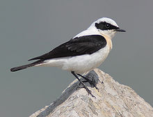
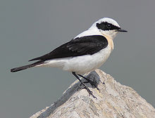

| Black-eared Wheatear | |
|---|---|
|  | |
| Adult male of eastern race (O. h. melanoleuca) | |
| Conservation status | |
| Binomial name | |
| Oenanthe hispanica (Linnaeus, 1758) |
| Black-eared Wheatear | |
|---|---|
|  | |
| Adult male of eastern race (O. h. melanoleuca) | |
| Conservation status | |
| Binomial name | |
| Oenanthe hispanica (Linnaeus, 1758) |
The Black-eared Wheatear (Oenanthe hispanica) is a wheatear, a small migratory passerine bird that was formerly classed as a member of the Thrush family Turdidae, but is now more generally considered to be an Old World flycatcher, Muscicapidae.
This 13.5-15.5 cm (5.6 inch) long insectivorous species is dimorphic with eastern and western races, sometimes split as Eastern Black-eared Wheatear and Western Black-eared Wheatear. In both forms, birds with or without a black throat are met with.
The breeding male of the western form O. h. hispanica of the Iberian peninsula and north Africa has the forehead and crown white or nearly white, the mantle buff, and the wings blacker than those of the Northern Wheatear. The underparts are white tinged with buff. The back, upper tail coverts and most of the tail are white. The ear coverts and a line from the bill, and sometimes the throat, are black.
In autumn and winter the head and mantle are distinctly buff, as are the underparts, including the throat, but the buff varies in intensity. Except for the central pair, the tail feathers are much whiter than in the Northern Wheatear, the white on the inner web often extending to the tip.
The female is a browner bird, but has the characteristic lower back, and her seasonal changes are less marked.
The eastern O. h. melanoleuca is found in the eastern Mediterranean, and migrates to winter quarters in the Sudan.
The male of the eastern form is even whiter in summer than the western bird, but as a rule may be distinguished by the line which extends across the base of the bill. Black-throated individuals of this race have a greater amount of black on the throat and face than on the western birds, and the black generally terminates more abruptly or in a straighter line.
It is a rare vagrant to northwest Europe.

{kind=link}